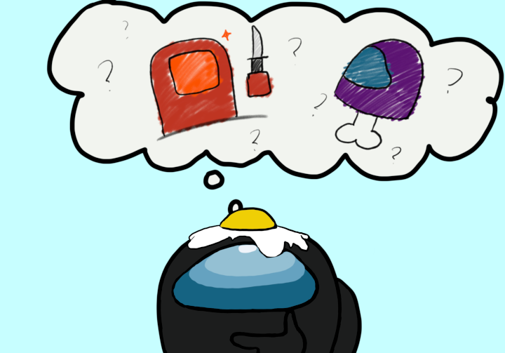

Second Discussion
You know that there’s only 1 imposter left and you start to feel the pressure from wanting to kick out the imposter during this discussion. Remember, you saw Red walk away from the astroid room, which is near the oxygen room. You also did not see anyone else before you walked into the Oxygen Room. Now, what will you say?